Tuscany Farm Florency
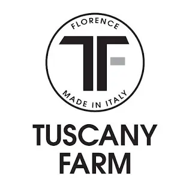
Oggi parliamo della cura della pelle con un’azienda tutta italiana. Il marchio Tuscany Farm Florence è una marchio che ha creato linee cosmetiche con i principi bionaturali come i componenti nobili del latte (vitamine, proteine e siero del latte).
Vengono lavorati con cura, stabilizzati e De-allergenizzati per essere accessibili ad ogni tipo di pelle.
Cosa molto importante è che non sono assolutamente prodotti testati sugli animali.
La Tuscany ha abbracciato l’idea di bellezza come sinonimo di cura personale e non di un lusso.

Sono stata omaggiata dall'azienda di tanti bei prodotti, ho preso molto tempo per parlarvene lo so, ma ho voluto testare per bene questi prodotti in prima persona prima di scrivere il mio modesto parere.
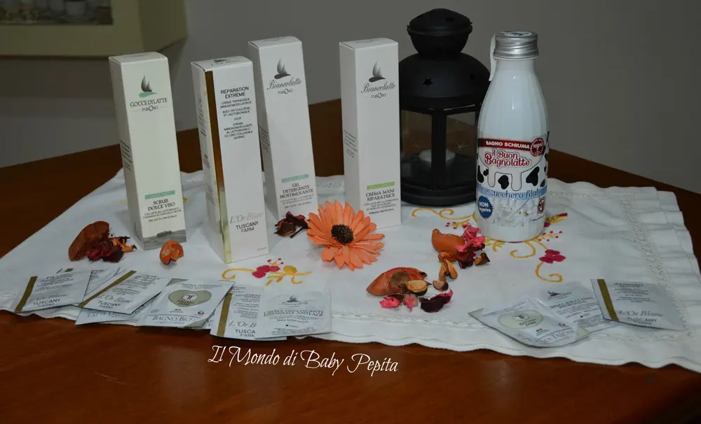
Sappiamo l’importanza e le proprietà curative del latte e del siero del latte già secoli ormai.

IPPOCRATE, il padre della medicina antica, prescriveva il siero di latte come rimedio naturale a numerose malattie.
La meta della medicina ippocratica era di vivere in armonia con la natura per restare sani nella mente e nel corpo. Ippocrate diceva: il miglior medico per il malato è la sua propria forza vitale. Questa trova da sè la via che porta alla guarigione.
Secondo Ippocrate "ci si può mantenere in buona salute solo attraverso la giusta dose degli umori del corpo, che dipendono molto dall'alimentazione e da un modo di vivere naturale.
Il famoso medico greco TEOFRASTO raccomandava il siero del latte proprio come spugnature o bagni sulla pelle infiammata, perché aveva compreso che i fermenti lattici contenuti nel siero erano responsabili del ripristino della naturale acidità della pelle e li utilizzava contro le infiammazioni e le infezioni batteriche.Dopo esserci un pò informati sull'importanza delle proprietà curative voglio farvi vedere di cosa sono stata omaggiata:
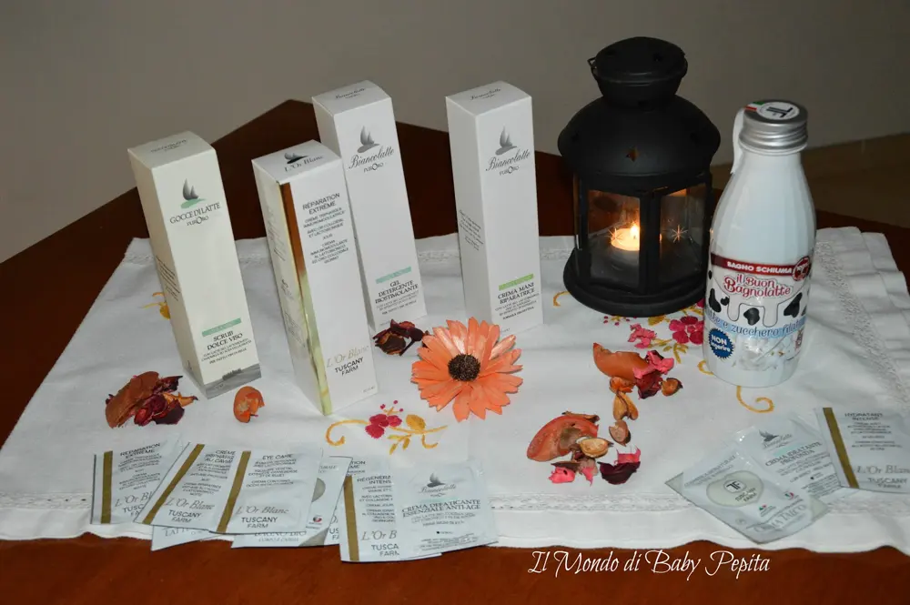
Troviamo nella foto :- Scrub dolce viso (con Camomilla Lattobionici e Acidi della Frutta)
- Crema Viso Giorno Immunomodulante (con Lattobionico e Oro Colloidale)
- Gel Detergente Biostimolante (con latte bio, lattobionico ed estratto di uva rossa)
- Crema Mani Riparatrice (Con latte bio, lattobionico , olio di avocado ed estratto di mosqueta)
- Bagnoschiuma Zucchero Filato
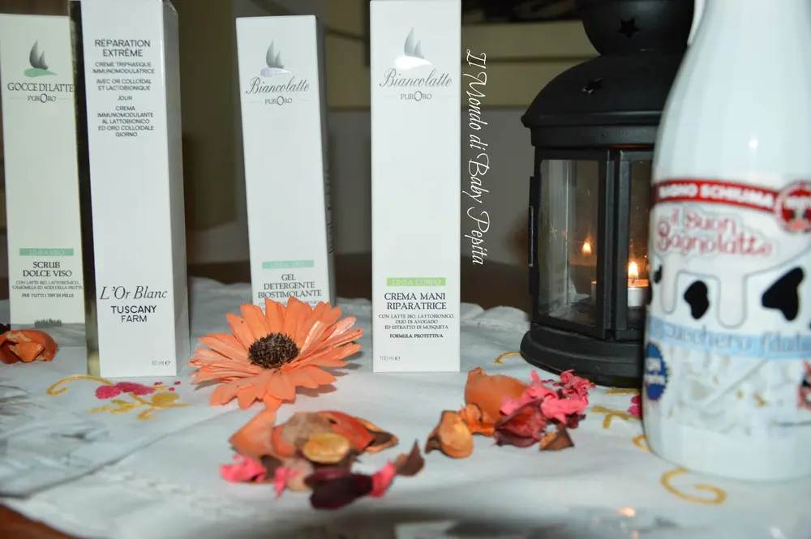
Passiamo a parlare dunque dei prodotti nello specifico:
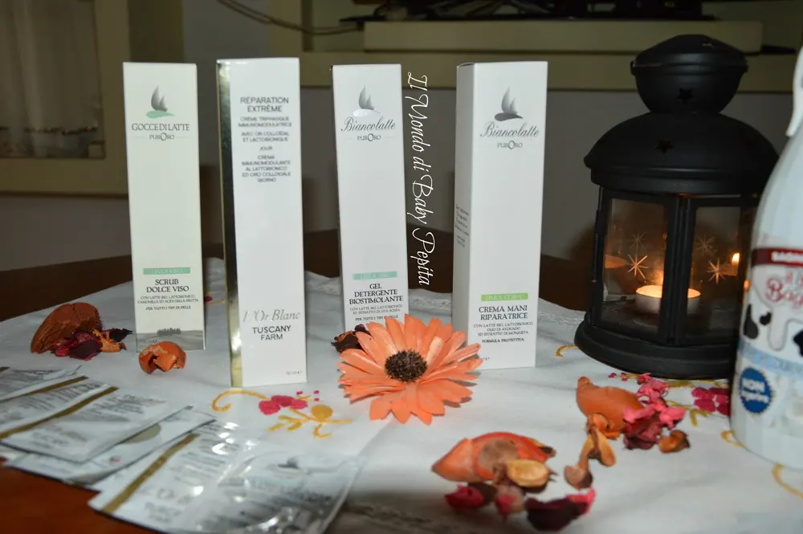
Troviamo 4 creme sia per le mani che per il viso.

Parliamo dello SCRUB DOLCE VISO con camomilla e acidi della frutta. Un trattamento da fare periodicamente per donare luminosità e ossigenazione al viso.
Contribuisce ad eliminare le cellule morte che non sono state naturalmente eliminate dal processo di rinnovamento cellulare.
Il prodotto è indicato per rendere la pelle più pulita, luminosa e liscia, oltre che aiutare a ridurre i segni dell'invecchiamento.
Lo strato superficiale della pelle viene rimosso grazie alle particelle sferiche che massaggiando sulla pelle delicatamente eliminano le impurità della pelle.
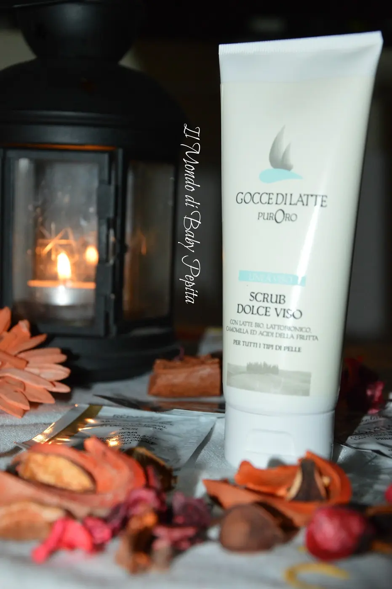
Consigli per l'uso: applicarne una piccola quantità sulla mano e stendere delicatamente sul viso evitando il contorno occhi. Fare un lieve massaggio fino al collo (ovviamente con viso ben struccato e inumidito) facendo movimenti circolari. Dopo di chè risciacquare il viso con acqua tiepida ed applicare un tonico.Il tubetto contiene 100 ml di prodottoPrezzo: 11,90 €
La crema viso giorno immunomodulante con Lattobionico e Oro Colloidale è una crema particolarmente indicata per mantenere a lungo la freschezza della cute grazie appunto all'oro colloidale. 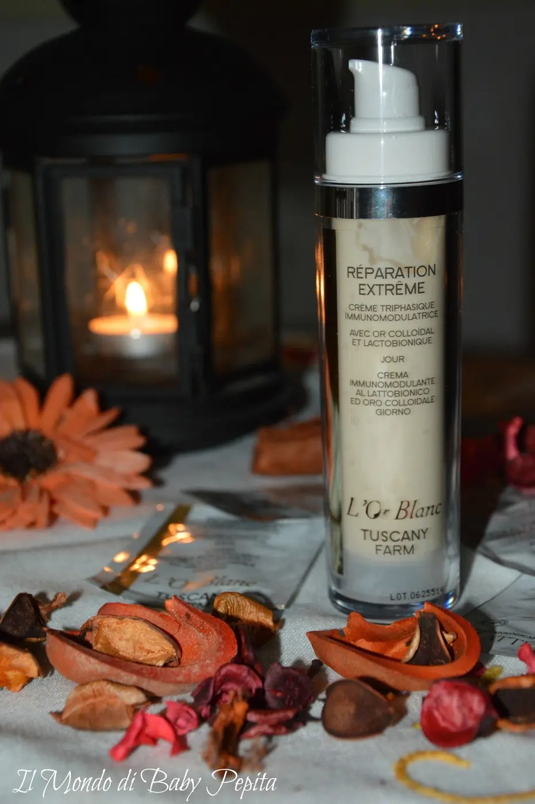
Ma cos'è l'oro colloidale?
L'oro è un qualcosa di prezioso anche per la salute e associato al colloidale hanno effetti terapeutici .Nello specifico l'oro colloidale è uno strato colloidale di particelle dell'oro di dimensioni microscopiche trasformate in fluido. A differenza dell'oro inorganico, che sarebbe l'oro comunemente conosciuto da tutti noi, l'oro organico in forma colloidale è un tipo di oro utilizzabile sull'organismo umano. Detto ciò possiamo capire che l'oro è anch'esso un elemento curativo. Esso agisce a due livelli:- a livello cellulare; che grazie alla sua presenza permette alle cellulare di regolarsi e quindi si comporta come un catalizzatore, facilitando le funzioni fisiologiche, che in caso contrario contribuisce a riequilibrare le funzioni.
- a livello energetico; che non viene quasi mai considerato ma che è molto importane, in quanto l'oro prende vita grazie alle cellule che lo ospitano. L'acqua presente nelle particelle di oro hanno un efficacia benefica per il corpo favorendo così uno stato di armonia ottimizzando rendendo il corpo armoniosamente più sano.
Gel detergente biostimolante con latte bio, lattobionico ed estratto di uva rossa è un prodotto che sto usando davvero tanto, è entrato a far parte della mia routine quotidiana.
Tutte le mattine quando faccio il mio processo di lavare il viso questo gel è il mio "detergente naturale".
Dopo averlo usato sento un pò la pelle più pulita e fresca.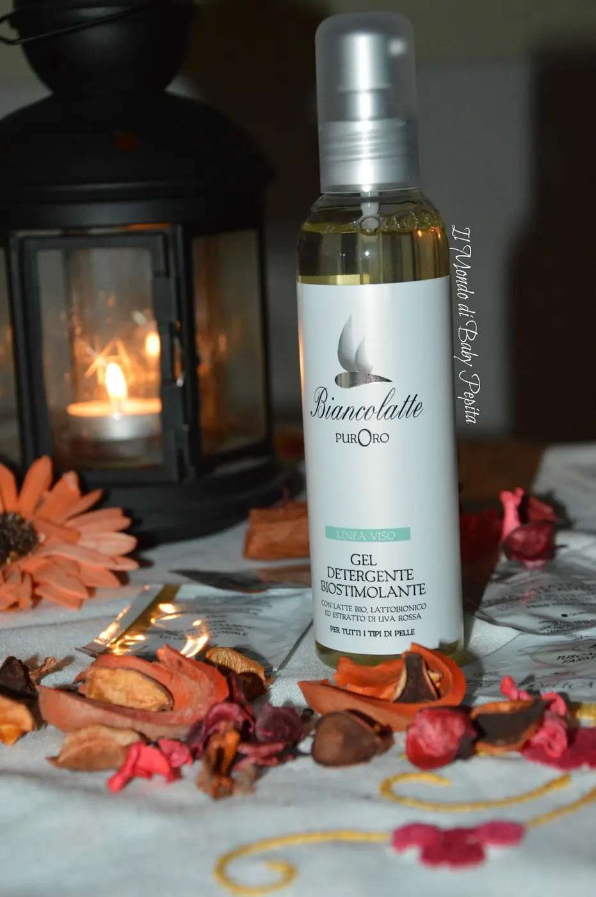
Viene usato principalmente come pulizia del viso e questo gel oltre ad eliminare le impurità del viso anche come struccante, restituisce luminosità alla pelle stanca. Consigli per l'uso: Quando state per lavarvi il viso applicate una piccola quantità con il dosatore in mezzo al palmo della mano e passatelo sul viso, fate un lieve massaggio e risciacquate il tutto. Un processo facile e non perditempo che rivitalizza il viso in meno di 3 minuti. Ma cerchiamo di capire perchè l'uva rossa?!Gli estratti dell'uva rossa fanno da funzione protettiva donando elasticità alla pelle. Inoltre contiene i principi attivi della vitamina C che da la sua efficacia nel tempo, quindi con l'uso frequento del prodotto. Ideale per combattere l'invecchiamento cutaneo, mantenere l’idratazione e l’elasticità della pelle, contrastare i segni dell’invecchiamento come perdita di tono, disidratazione, rughe, perdita di luminosità e foto invecchiamento. Protegge anche dai danni provocati dall'esposizione al sole che purtroppo sappiamo che il sole causa l'invecchiamento della pelle, desquamazione, secchezza e comparsa precoce delle rughe.Il flacone contiene 100 ml di prodotto (e credetemi vi dura una vita)Prezzo: 7,90 €Crema mani riparatrice con latte bio, lattobionico, olio di avogado ed estratto di mosqueta è una crema davvero di ottima formulazione, applicandola sulle mani protegge dalle aggressioni esterne creando un film protettivo.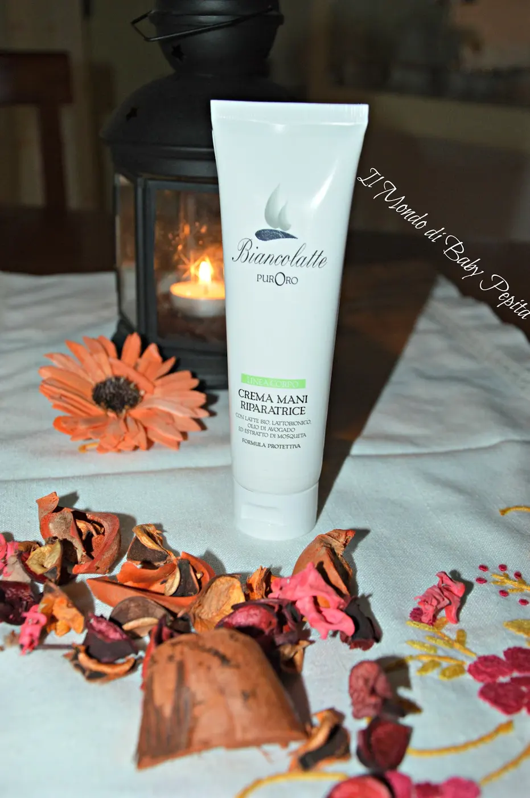
Usate questa crema tutte le volte che noterete le mani secche garantendo morbidezza e prevenendo l'invecchiamento della pelle, macchie scure e secchezza. Il tubetto contiene 100 mlPrezzo intorno ai 9,00 €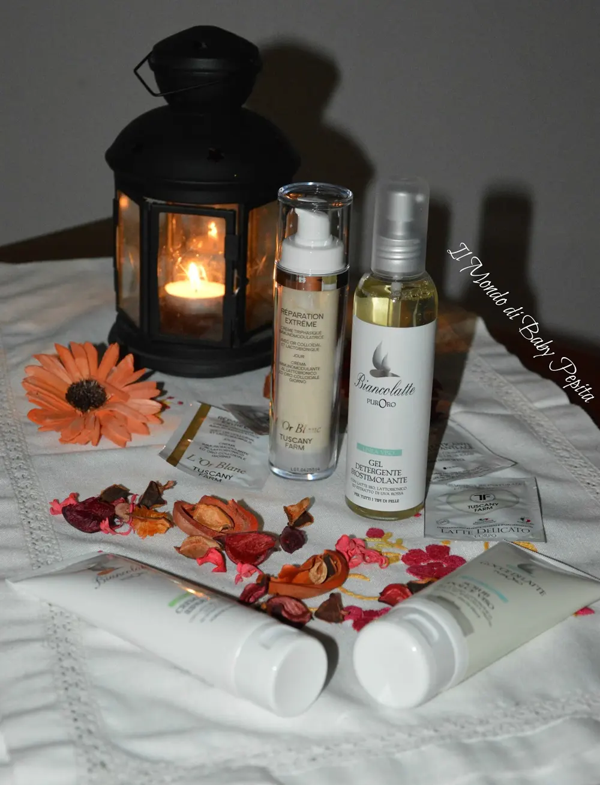
Il pezzo forte se non per altro che dalla forma e dall'odore è il bagno schiuma al latte e zucchero filato. Simpatico già dalla confezione, che giustamente dice NON INGERIRE, poichè alla vista la prima cosa che verrebbe voglia di fare è proprio quello di bere :D abbiamo infatti anche noi giocato con le foto associandolo al caffè ahah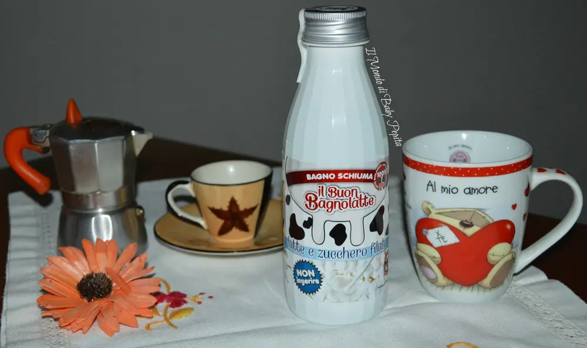
Devo essere sincera, come amo i bagno schiuma, i gel doccia e le creme per il corpo profumate non amo nient'altro, questo bagno schiuma ha un odore così dolce che è proprio bello portarlo addosso. Se poi associamo il processo di coccole da doccia con un beneficio come idratare e nutrire la pelle è ancora più bello profumare così tanto. La Tuscany Farm Florency non ha fatto solo questo tipo di bagno schiuma, infatti ha presentato una gamma chiamata MILK & SHAKE che ha una varietà di profumi dolci e delicati sia per uomo che per donna.Ci sono anche alla FRAGOLA, alla MANDORLA, al MIELE & AGRUMI, alla VANIGLIA, al LATTE & YOGURT e poi come il mio al LATTE & ZUCCHERO FILATO.La bottiglia carinissima contiene 500 ml di prodottoPREZZO : 4,99 €Prodotti validi uno per uno, consiglio ad ognuno di provarne almeno uno vedrete subito un netto miglioramento, tutto questo regalatoci dalla natura che è nostra amica.
Ringrazio l'azienda che mi ha offerto questi prodotti.Vi lascio qui sotto la loro pagina FB: TUSCANY FARM FLORENCYIl sito dove potrete leggere tutto ciò che vi interessa sapere e qualora vogliate acquistare: TUSCANY FARM FLORENCY